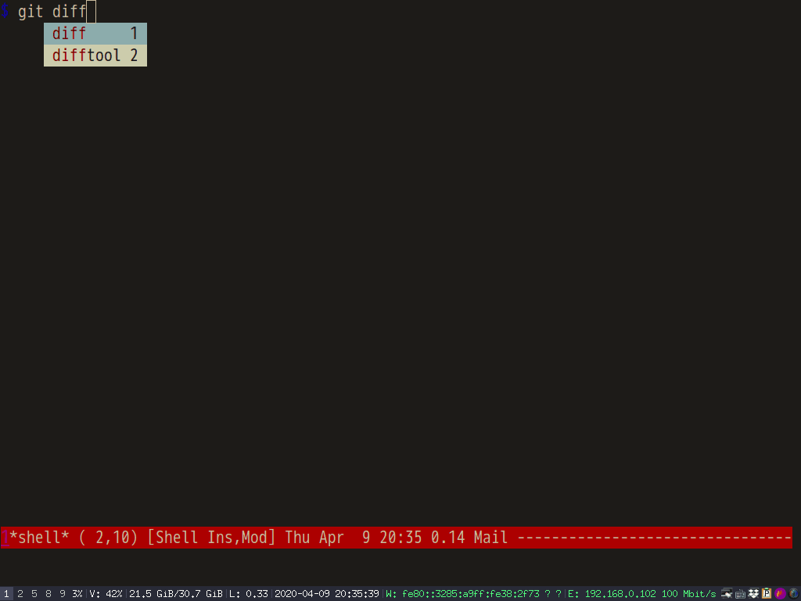

Thoughts on "Native shell completion in Emacs"
Native shell completion in Emacs by Troy Hinckley is must read for completion in shell-mode.
One problem is my ~/.bashrc executes /etc/bash_completion,
if [ -f /etc/bash_completion ]; then
. /etc/bash_completion
fi
Unfortunately /etc/bash_completion makes complete -p output some lines the Emacs function bash-completion-tokenize can't analyze.
Here is output of complete -p at my PC,
... complete -F _known_hosts mtr complete -o default -o nospace -W 'homepc 192.168.1.104 github.com gitlab.com' scp complete -o default -f -X '!*.dvi' dvipdf ...
The line gitlab.com' scp will crash bash-completion-tokenize. Obviously, one line
complete -o default -o nospace -W 'homepc 192.168.1.104 github.com gitlab.com' scp is wrongly split into multiple lines by complete -p.
In shell-mode, completion functions might call bash-completion-tokenize. If bash-completion-tokenize crashes, the completion in shell-mode won't work.
Besides, if company-mode provides auto-completion UI, it's better to place the backend company-files before company-native-complete. It's because the backend company-files displays the full file path in candidates. So users can complete the whole path in one shot.
My setup code for the packages Troy Hinckley suggested,
;; Enable auto-completion in `shell'.
(with-eval-after-load 'shell
(native-complete-setup-bash))
;; `bash-completion-tokenize' can handle garbage output of "complete -p"
(defadvice bash-completion-tokenize (around bash-completion-tokenize-hack activate)
(let* ((args (ad-get-args 0))
(beg (nth 0 args))
(end (nth 1 args)))
;; original code extracts tokens from output of "complete -p" line by line
(cond
((not (string-match-p "^complete " (buffer-substring beg end)))
;; filter out some wierd lines
(setq ad-return-value nil))
(t
ad-do-it))))
(defun shell-mode-hook-setup ()
"Set up `shell-mode'."
;; hook `completion-at-point', optional
(add-hook 'completion-at-point-functions #'native-complete-at-point nil t)
(setq-local company-backends '((company-files company-native-complete)))
;; `company-native-complete' is better than `completion-at-point'
(local-set-key (kbd "TAB") 'company-complete))
(add-hook 'shell-mode-hook 'shell-mode-hook-setup)
Screenshot,


How to speed up lsp-mode
Here is my setup,
(with-eval-after-load 'lsp-mode
;; enable log only for debug
(setq lsp-log-io nil)
;; use `evil-matchit' instead
(setq lsp-enable-folding nil)
;; no real time syntax check
(setq lsp-diagnostic-package :none)
;; handle yasnippet by myself
(setq lsp-enable-snippet nil)
;; use `company-ctags' only.
;; Please note `company-lsp' is automatically enabled if installed
(setq lsp-enable-completion-at-point nil)
;; turn off for better performance
(setq lsp-enable-symbol-highlighting nil)
;; use ffip instead
(setq lsp-enable-links nil)
;; auto restart lsp
(setq lsp-restart 'auto-restart)
;; @see https://github.com/emacs-lsp/lsp-mode/pull/1498 and code related to auto configure.
;; Require clients could be slow.
;; I only load `lsp-clients' because it includes the js client which I'm interested
(setq lsp-client-packages '(lsp-clients))
;; don't scan 3rd party javascript libraries
(push "[/\\\\][^/\\\\]*\\.\\(json\\|html\\|jade\\)$" lsp-file-watch-ignored) ; json
;; don't ping LSP lanaguage server too frequently
(defvar lsp-on-touch-time 0)
(defadvice lsp-on-change (around lsp-on-change-hack activate)
;; don't run `lsp-on-change' too frequently
(when (> (- (float-time (current-time))
lsp-on-touch-time) 30) ;; 30 seconds
(setq lsp-on-touch-time (float-time (current-time)))
ad-do-it)))
(defun my-connect-lsp (&optional no-reconnect)
"Connect lsp server. If NO-RECONNECT is t, don't shutdown existing lsp connection."
(interactive "P")
(when (and (not no-reconnect)
(fboundp 'lsp-disconnect))
(lsp-disconnect))
(when (and buffer-file-name
(not (member (file-name-extension buffer-file-name)
'("json"))))
(unless (and (boundp 'lsp-mode) lsp-mode)
(if (derived-mode-p 'js2-mode) (setq-local lsp-enable-imenu nil))
(lsp-deferred))))
To enable lsp for the major mode XXX-mode needs only one line,
(add-hook 'XXX-mode-hook #'my-connect-lsp)
You also need install three packages,
- counsel-etags for code navigation
- company-ctags for code completion
- find-file-in-project (ffip) for searching file in project
Explanation,
Ctags is used to generate tags file for company-ctags and counsel-etags. GNU Find is required for find-file-in-project.
These three packages are faster and can replace the corresponding functionalities in lsp-mode.
I don't need any lint tools from lsp-mode because the lint tool is already included in our build script. I can see the syntax error from terminal.
I advice the lsp-on-change in order to notify the language server less frequently.
js2-mode has its own javascript parser extract imenu items. So I don't need javascript language server's parser to send back imenu items.
By default lsp-client-packages contains many clients, but I only code in javascript which is included in lsp-clients.
Here is code quoted from lsp-mode,
;;;###autoload
(defun lsp (&optional arg)
;; ...
(when (and lsp-auto-configure)
(seq-do (lambda (package) (require package nil t))
lsp-client-packages))
;; ...
)
I have done some profiling by insert (profiler-report-cpu) at the end of lsp (the bottlenecks is highlighted).
The language server I used can read jsconfig.json in project root. I can specify the directories to exclude in it.
Yin and Yang in Emacs
As a Chinese, I studied Tao Te Ching since childhood. So I believe Tao (the way) exist in Emacs. Tao is basically Yin and Yang who lives in harmony in Emacs.
I can't say Yin is good and Yang is evil, or vice versa. All I can do is to find the way to make Yin and Yang co-exist.
For example, a few days ago I published Effective "git blame" in Emacs which introduced my package vc-msg.
It became one of my most popular reddit post because its unique feature partial line blame,

I noticed some comments compared my package with Magit. Those comments were very educational and I did learn a few useful tricks.
My point is, vc-msg and Magit could collaborate without any problem, like Yin and Yang lives harmony. If you find any conflict between vc-msg and Magit, just let me know. I will fix it.
I totally understand there are many Magit lovers in Emacs community. So I make vs-msg v1.0.2 to support Magit. You can use partial line blame in vc-msg but calling Magit command to open the commit.
It's only one line setup,
(setq vc-msg-git-show-commit-function 'magit-show-commit)
I tested in magit-blame-mode and found no issue.
I'm sure vc-msg should work in other major modes or minor modes. There are also two callback functions vc-msg-get-current-file-function and vc-msg-get-line-num-function which users can customize.
Effective "git blame" in Emacs
I published Emacs package vc-msg. It uses git-blame to show commit information of current line.
In the new version, it can display the correct commit information of current line.
For example, the line 6 at https://github.com/redguardtoo/test-git-blame/blob/master/hello.js is changed by three commits.
Select the partial of line 6 and run vc-msg-show, the correct commit is displayed.
Screenshots,
Emacs is the best merge tool for Git
CREATED:
UPDATED: if you use my solution, you can replace emacs with emacsclient. So it's even faster than Vim.
I used to regard vimdiff as the best merge tool for Git because it's simply fast.
Here is the demo how I use vimdiff to resolve conflicts from https://github.com/redguardtoo/test-git-mergetool.

Please note in the screencast I use Git built in command mergetool. It will automatically open conflicted file one by one using vim. In other software, the developer need manually select and open the conflicted file.
The only issue is Vim is not as powerful as Emacs.
Resolving conflicts is NOT only picking up a diff hunk from remote/local buffer. I often need place my hunk into merged buffer first, then I go to remote buffer and copy some snippet into merged buffer. So there are lots of sub-window operations.
In Emacs, I use Ace-window and Winum to move focus between sub-windows. I also use API window-configuration-to-register and jump-to-register to save/load windows layout. Besides, Ediff is a beast to handle diff and patch.
So I give one example to prove why Emacs should be a better merge tool in theory. If you are good at both Vim and Emacs, you know it's the truth.
Now let's talk the real world problem. And I will show you a perfect solution soon.
The problem is, I never use Emacs to resolve merge conflicts for two reasons:
- First, My Emacs configuration uses too many packages. It starts up slowly. As you can see from vimdiff demo,
git mergetoolrestarts the editor many times. So the editor should be lightweight. - Second, the UI of
ediffis not right. UI of Vimdiff is much better. All operations should be completed freely in any sub-window instead of ediff control panel only.
Luckily, Emacs gives me the full freedom to solve the problem. The final result is beyond my expectation.
Here is the complete solution.
This technique is only useful for git mergetool because git will open and close the text editor Emacs many times.
Insert below code into ~/.gitconfig,
[mergetool.ediff]
# use git mergetool ediff to resolve conflicts
cmd = emacs -nw -Q --eval \"(setq startup-now t)\" -l \"~/.emacs.d/init.el\" --eval \"(progn (setq ediff-quit-hook 'kill-emacs) (if (file-readable-p \\\"$BASE\\\") (ediff-merge-files-with-ancestor \\\"$LOCAL\\\" \\\"$REMOTE\\\" \\\"$BASE\\\" nil \\\"$MERGED\\\") (ediff-merge-files \\\"$LOCAL\\\" \\\"$REMOTE\\\" nil \\\"$MERGED\\\")))\"
In above code, option -Q equals -q --no-site-file --no-splash. Actually, only -q is critical. -q means "Do not load an init file". A global emacs lisp flag startup-now is defined before loading ~/.emacs.d/init.el.
Then in ~/.emacs.d/init.el, I need only add one line,
(when (not (boundp 'startup-now))
;; heavy weight configuration happens here
)
When startup-now is defined, all the heavyweight configuration should be off. Considering in this scenario, we are using Emacs only as merge tool, 99% configuration could be turned off. For example, set up for any programming language is not required. Flyspell and flycheck should be off. Yasnippet is also useless.
I only need focus on essential operations related to text/file/window.
Evil should be used. At the beginning of this article, I said "I love vimdiff because it's fast". It's impossible to be more efficient without Evil.
Any patch/diff utilities should be included too. counsel/swiper/ivy is also must have because I can use counsel-git to find file and counsel-git-grep to grep text.
Native Emacs API is enough to save/load windows layout.
Packages dependent on ediff (Magit?) could also benefit from optimization of ediff.
The optimization is simple. Do everything in merged buffer.
First I move focus into merged buffer when Emacs starts up,
This set up happens in ediff-startup-hook,
(defun ediff-startup-hook-setup ()
;; hide control panel if it's current buffer
(when (string-match-p (setq my-ediff-panel-name (buffer-name))
"\*Ediff Control Panel.*\*")
;; move to the first difference
(ediff-next-difference)
;; move to the merged buffer window
(winum-select-window-by-number 3)
;; save the windows layout
(window-configuration-to-register ?a)))
(add-hook 'ediff-startup-hook 'ediff-startup-hook-setup)
Please note I use winum-select-window-by-number from winum move focus to merged buffer. You can use any other third party package or native API select-window instead.
Saving initial windows layout into register a is achieved by (window-configuration-to-register ?a) in ediff-startup-hook. (jump-to-register ?a) restores the saved layout.
Then we need make sure ediff commands can be used out of ediff's panel. Currently ediff command can only be triggered inside of its panel.
The trick is "move focus into ediff panel temporarily to execute its commands, then move focus back to original window".
So I designed a macro my-ediff-command to do this,
(defmacro my-ediff-command (cmd &optional no-arg)
`(lambda (&optional arg)
(interactive "P")
(let* ((w (get-buffer-window)))
;; go to panel window
(select-window (get-buffer-window my-ediff-panel-name))
;; execute ediff command, ignore any error
(condition-case e
(if ,no-arg (funcall ,cmd) (funcall ,cmd arg))
(error
(message "%s" (error-message-string e))))
;; back to original window
(select-window w))))
Usage is simple,
(global-set-key (kbd "C-c C-y") (my-ediff-command 'ediff-next-difference))
Here is the list of essential ediff commands,
- ediff-next-difference
- ediff-previous-difference
- ediff-restore-diff-in-merge-buffer
- ediff-revert-buffers-then-recompute-diffs
- ediff-copy-A-to-C
- ediff-copy-A-to-C
- ediff-copy-both-to-C
You can use Hyra or General.el to assign key bindings.
The definition of ediff-copy-both-to-C,
;; @see https://stackoverflow.com/a/29757750/245363
(defun ediff-copy-both-to-C (&optional arg)
"Copy code from both A and B to C."
(interactive)
(ediff-copy-diff ediff-current-difference nil 'C nil
(concat
(ediff-get-region-contents ediff-current-difference 'A ediff-control-buffer)
(ediff-get-region-contents ediff-current-difference 'B ediff-control-buffer))))
Here is my ~/.gitconfig and my ediff set up in real world.
Please note the techniques introduced here can be used with other VCS (subversion, perforce …).
Demo on using Emacs to resolve merge conflicts,

counsel-etags 1.9.0 is out
Counsel-etags is fast, energy-saving, and powerful code navigation solution.
This version can list tags in current buffer.
You can simply run M-x counsel-etags-list-tag-in-current-file.
Or set up imenu before M-x imenu or M-x helm-imenu or M-x counsel-imenu,
(setq imenu-create-index-function 'counsel-etags-imenu-default-create-index-function)
screenshot:

Aspell 0.60.8 will have direct support for camelCase words
Kevin Atkinso told me this good news.
Currently I'm using Emacs Lisp to check camel case words.
The new option --camel-case from aspell will definitely speed up the whole process.
Minimum Emacs setup,
(setq ispell-program-name "aspell")
(setq-default ispell-extra-args '("--sug-mode=ultra"
"--lang=en_US"))
;; Make sure new aspell is installed
(when (string-match-p "--camel-case"
(shell-command-to-string (concat ispell-program-name " --help")))
(push "--camel-case" ispell-extra-args))
Optionally, you could read What's the best spell check setup in emacs.
Javascript code navigation in counsel-etags
Javascript code navigation is supported by counsel-etags out of box.
It supports new javascript syntax like arrow function because counsel-etags is only frontend.
It reads tags file created by backend CLI program Ctags. Ctags uses regular expression to extract tag name from source code.
But there are some syntax which regular expression could not help.
For example, json object path can't be extracted by regular expression.
Given an object a in file A,
var a = {
b: {
c: 3,
}
};
File B has code let v1 = a.b.c;, how can we jump to the definition of the field c from json path a.b.c?
The solution is to use Lisp to parse code in file A and generate extra navigation data which could be appended to tags file generated by Ctags.
The algorithm is simple,
- Traverse all the field of object
ain file A. Use APIjs2-print-json-pathfromjs2-modeto get json path of current field. - The json path could be regarded as tags name. We've already got file name and line number. So there is enough information to create navigation data for tags file. Here is tags file format.
Necessary utilities are already provided by counsel-etags v1.8.7,
- After tags files is generated by Ctags, the hook
counsel-etags-after-update-tags-hookis executed. Users can append tags file in this hook -
(counsel-etags-tag-line code-snippet tag-name line-number byte-offset)return a line which could be appended into tags file
My current project uses a technology called styled-components which has an advanced feature theming.
It could dynamically change web application's appearance and is a critical technology for our application to support multiple customer. Application's theme is basically a file containing a huge json object. So it's important that developers can jump to the corresponding json object's field by json path.
Screencast
Code
(require 'counsel-etags)
(defun my-manual-update-tag-file (code-file tags-file)
(let* ((dir (file-name-directory tags-file))
(path (concat dir code-file))
curline
jp
tagstr)
(unless (featurep 'js2-mode) (require 'js2-mode))
(with-temp-buffer
(insert-file-contents path)
(js2-init-scanner)
(js2-do-parse)
(goto-char (point-min))
;; find all js object property names
(while (re-search-forward "\"?[a-z][a-zA-Z0-9]*\"?:" (point-max) t)
(when (setq jp (js2-print-json-path))
(setq curline (string-trim (buffer-substring-no-properties (line-beginning-position)
(line-end-position))))
(setq tagstr (concat tagstr
(counsel-etags-tag-line curline
jp
(count-lines 1 (point))
(point)))))
;; move focus to next search
(goto-char (line-end-position))))
(when tagstr
(with-temp-buffer
(insert-file-contents tags-file)
(goto-char (line-end-position))
(insert (format "\n\014\n%s,%d\n%s" code-file 0 tagstr))
(write-region (point-min) (point-max) tags-file nil :silent)))))
(defun counsel-etags-after-update-tags-hook-setup (tags-file)
(my-manual-update-tag-file "frontend/theming/themes/darkTheme.js" tags-file)
(my-manual-update-tag-file "frontend/theming/themes/lightTheme.js" tags-file))
(add-hook 'counsel-etags-after-update-tags-hook 'counsel-etags-after-update-tags-hook-setup)
dianyou 0.0.3 is out
I created dianyou (电邮) to solve improve my Gnus work flow.
Search mails
Most Gnus users use gnus-group-make-nnir-group to search mails. But it's not usable in "Summary Buffer". Its IMAP SEARCH Command is hard to use.
It could be replaced by dianyou-group-make-nnir-group which supports shortcuts. For example, you can input "f John s 1y2w2d" and select "imap" when Gnus asks the question "Imap Search in". It means search mails from John since 1 year, 2 weeks and 2 days ago.
Auto complete email address
I'm too lazy to set up my contacts. It would be better that Gnus could automatically collect email addresses from all received mails. So I created the command dianyou-insert-email-address-from-received-mails. The inserted email address is also inserted into the global variable dianyou-email-address-history which could be persisted by session.
Switch Gnus buffer
One annoying thing in Gnus is pressing "q" will close opened folder. I often pressed "q" when I only intended to switch to another Gnus buffer. Now I can use dianyou-switch-gnus-buffer.
Paste image from clipboard
Use dianyou-paste-image-from-clipboard. CLI program xclip should be installed at first.
My favorite Richard Stallman interviews
I've watched/listened many Richard Stallman interviews. Some hosts are really bad. They know nothing about technology and are too aggressive.
But good interviewers still exist. Here are top 3 interviews I recommend:
- Interview with Richard Stallman from Hacker Public Radio. The interviewer is technical by himself so he can ask right questions and understand answers immediately.
- Richard Stallman on Free Software: Freedom is Worth the Inconvenience from Singularity Weblog. Nikola Danaylov focus more on ethic perspective of technology.
- Dr Diane Hamilton Interviews Richard Stallman. Diane Hamilton is good listener and just let Richard Stallman talk. Stallman quoted text from Chinese ancient novel San Guo (Three Kingdom) in the interview.